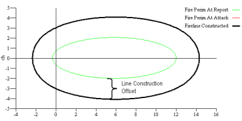
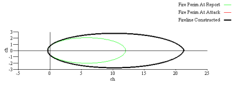

|
Line Construction Offset |
Line construction offset is the distance from the fire at which the suppression line is constructed. A line construction offset distance of zero indicates direct attack, while any other value indicates indirect attack.
| I/O | Module | If | Notes |
| Input | CONTAIN | ||
| Output | None |
|  |
|  |